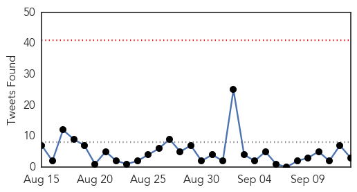

Unknown
30-Day Web Trend
3 alerts, 0 warnings

30-Day Twitter Trend
0 alerts, 0 warnings

Article Locations
Article Confidences

Top Articles:
- 0.994
- 29 children now thought to have resurgent D68 virus
- 0.993
- Scary Respiratory Virus Is Sickening Children In NY State
- 0.992
- Serious respiratory illness hits hundreds of kids
- 0.988
- Indian family refuses to receive body of MERS victim
- 0.987
- Pitt scientists collaborate in effort to combat the deadly MERS virus
- 0.987
- At least twelve children in New York state have enterovirus D68, in latest wave of rare respiratory illness
- 0.987
- Indian family refuses to receive body of MERS victim
- 0.984
- Enterovirus Cases Suspected in Connecticut
- 0.977
- State sees increase in respiratory illnesses
- 0.961
- Hospitals see surge in kids’ breathing problems
- 0.944
- Suspected cases of enterovirus D68 investigated in Conn.
- 0.924
- “Stomach flu” outbreak in Yerevan? – newspaper
- 0.917
- Chicago Tribune
- 0.917
- Chicago Tribune
- 0.917
- Chicago Tribune
- 0.917
- Chicago Tribune
- 0.917
- Chicago Tribune
- 0.911
- News, Sports, Jobs, Michigan, Community Information - The Alpena News
- 0.910
- The world windows to Thailand
- 0.906
- 157 sick, up from 11 last year; reports of crypto rise in Florida county
- 0.889
- Family refuses to receive body of MERS victim
- 0.875
- Enterovirus results expected on Monday
- 0.869
- Zebra rabies case highlights wildlife risks, say Kenyan researchers
- 0.866
- Heavy artillery fire heard near Donetsk airport in east Ukraine
- 0.845
- Chorrord Ishkhanutyun: ‘Stomach flu’ outbreak in Yerevan? - Panorama
- 0.659
- The Post
- 0.654
- Hundreds of thousands still stranded in killer Kashmir floods
- 0.647
- Ebarb water tests positive for brain-eating amoeba
- 0.628
- HIV-positive man ordered to stop virus spread
- 0.598
- 200,000 still stranded in Kashmir floods
- 0.558
- GSK Thailand launches 'medicine bank' to help disaster victims
- 0.551
- Nigerian soldiers defeat Boko Haram fighters in key battle
- 0.551
- Kerry seeks Egypt’s help in battling the Islamic State
- 0.532
- Pakistan blows up dikes to save cities from flooding
- 0.528
- 200,000 still stranded in killer Kashmir floods
- 0.515
- Concern over dearth of Ayush medicines in rural hospitals
- 0.515
- Health Ministry sends over 100 tonnes of medicines to J&K
- 0.506
- Trail of destruction as flood water enters Multan villages.
Top Tweets:
- 0.598
- RT: Enterovirus-D68: Wash Hands with Soap + Water. Many sick don't have a fever. Virus lingers on doorknobs + countertops http:…
Ebola
30-Day Web Trend
0 alerts, 0 warnings

30-Day Twitter Trend
0 alerts, 0 warnings

Article Locations

Article Confidences

Top Articles:
- 1.000
- World Socialist Web Site
- 1.000
- Cuban communists aid WHO in Ebola battle
- 1.000
- WHO Denies Evacuation of Ebola-Stricken Doctor from Sierra Leone
- 1.000
- As Ebola grows out of control, WHO pleads for more health workers
- 1.000
- Treating Ebola hindered by lack of help
- 1.000
- Ebola toll hits 2400, Cuba pledges medics
- 1.000
- Ebola toll hits 2,400 as Cuba pledges medics
- 1.000
- The Portland Press Herald / Maine Sunday Telegram
- 1.000
- Obama to discuss US response to Ebola next week
- 1.000
- American Ebola Patient Gets Appetite Back
- 1.000
- the edge of knowledge
- 1.000
- Ebola Toll Hits 2,400 as Cuba Pledges Medics — Naharnet
- 1.000
- Developments in the Ebola crisis
- 1.000
- UN declines to evacuate Sierra Leonean doctor infected with Ebola
- 1.000
- Ebola toll hits 2 400 - UN - Africa
- 1.000
- domain-b.com : US scientists warn of high toll from Ebola as cases mount
- 1.000
- Ebola toll hits 2,400; Cuba to send medical team to W. Africa
- 1.000
- Ebola outbreak: WHO denies request from Sierra Leone to fly out infected doctor
- 1.000
- Obama to discuss US response to Ebola next week
- 1.000
- 4th Sierra Leonean doctor infected with Ebola
- 1.000
- Ebola outbreak reaches Senegal, riots break out in Guinea
- 1.000
- Ebola seriously threatens Liberia's national existence: minister
- 1.000
- WHO Calls for Increased Global Action on Ebola
- 1.000
- Ebola Situation in Senegal remains stable
- 1.000
- How Can We Help Fight the Ebola Outbreak?
- 1.000
- Remarks at a press conference: Cuban government announces substantial support to WHO Ebola response (WHO
- 0.999
- Haulage Trucks Flood Zimbabwe as Ebola Fears Grip Botswana
- 0.999
- Health Care Specialists Consider Different Treatments for Ebola
- 0.999
- Ebola growing out of control, warns WHO's Margaret Chan
- 0.999
- Dutch Ebola doctors to be evacuated
- 0.999
- Welcoming boost in Ebola response, Ban urges greater global support to fight epidemic
- 0.999
- Ebola outpaces response
- 0.999
- UN Health Agency Denies Evacuation Request For Sierra Leone Ebola Doctor
- 0.999
- Welcoming boost in Ebola response, Ban urges greater global support to fight epidemic
- 0.999
- Guinea reopens Ebola clinic as sick spill over border
- 0.999
- Ebola situation in Senegal remains stable
- 0.999
- Cuba sending more than 160 health workers to Africa to fight Ebola
- 0.999
- Cuba Sends Biggest Foreign Medical Team to Ebola-stricken Sierra Leone : Society : Chinatopix
- 0.999
- Sierra Leone requests funds for Ebola evacuation
- 0.999
- West African health centers can’t keep up with Ebola outbreak, WHO says
- 0.999
- Sudan Vision Daily
- 0.998
- Guinean who brought Ebola to Senegal recovered, to return
- 0.998
- American gets blood from fellow Ebola survivor
- 0.998
- U.S. to train Liberian armed forces to help tackle Ebola crisis
- 0.998
- Greater Global Support Urged To Fight Ebola Epidemic
- 0.998
- Western complacency is killing people
- 0.998
- African healthcare laid bare by Ebola epidemic
- 0.998
- Rampant fear of Ebola takes toll on Africa tourism as some stay away, operators say
- 0.998
- Rampant Ebola fear takes toll on Africa tourism
- 0.998
- U.S. to train Liberian armed forces to help tackle Ebola crisis
Showing top 50 articles...
Top Tweets:
- 0.840
- RT: CDC Update for Health care workers: Ebola Environmental Infection Control Procedures. On THCB tonight http://…
- 0.837
- RT: Fact vs. Fiction on Ebola SierraLeone Liberia RT: END EBOLA NOW PSA (KRIO/ENGLISH SUBTITLES) THIS: https://…
- 0.768
- Numbers for the Ebola outbreak in Congo as of September 11th. endebolanow ebola EbolaOutbreak http://t.co/vB2NjPWiAb